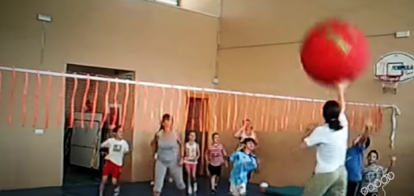

Característica general y Objetivo
El Bigball es un juego o deporte alternativo, coeducativo y de contacto que pretende desarrollar las habilidades y destrezas básicas motrices.
El objetivo del juego es marcar gol en la portería contraria con una pelota gigante, sin agarrarla ni retenerla; en un campo de futbol-sala o balonmano, donde no podemos entrar en las áreas y no hay porteros.
Material
Se juega con una pelota de 50 cms. De diámetro con cubierta de PVC y rellena de aire. Posee un Bote lento.
Terreno de juego y número de participantes
Campo de Fútbol Sala o Balonmano, de 40 x 20 aproximadamente
El nº de jugadores por equipo puede variar en función del grupo-clase. Aunque lo ideal es de 5 a 8 jugadores.
Principales reglas
- Se juegan dos tiempos de 20 minutos cada uno con un descanso de 10.
- Al inicio los jugadores de cada equipo se sitúan al borde de su área y el arbitro, monitor o profesor volea la pelota hacia el centro, donde salen los jugadores a disputarla.
- Se puede tirar a gol desde cualquier parte del campo y desde cualquier situación, es decir, falta corner o fuera, pero desde el saque de centro, tras encaja gol. No se permite el autosaque.
- La pelota no se puede agarrar ni retener con ninguna parte del cuerpo. Se puede la puede desplazar botándola, rodándola o golpeándola con cualquier parte del cuerpo.
- No está permitido entrar dentro de las áreas, ni atravesarlas. Tampoco pueden disputar la pelota más de dos jugadores de cada equipo.
- Las infracciones cometidas se sancionan con falta. La pelota de coloca en el suelo y se golpea con mano o pie. Se puede colocar una barrera defensiva a tres metros.
- Si un jugador defensor entra en su área evitando una ocasión clara de gol, se sanciona con penalti. Será lanzado mediante un golpeo de pie o mano desde el borde del área, o a 9 mts. Si los jugadores son de categorías superiores. Si la pelota sale por fuera de la línea de portería o queda muerta en el área es saque de puerta y es la única situación en que un jugador entra en su área para realizar el saque.